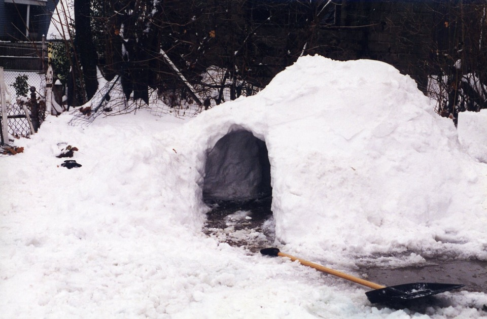
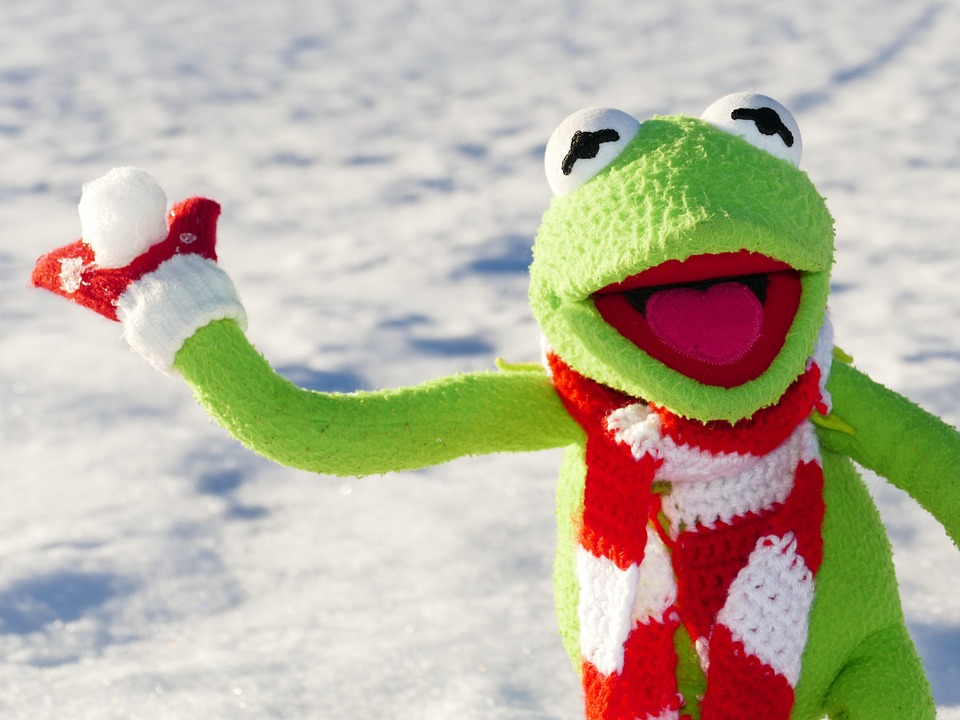
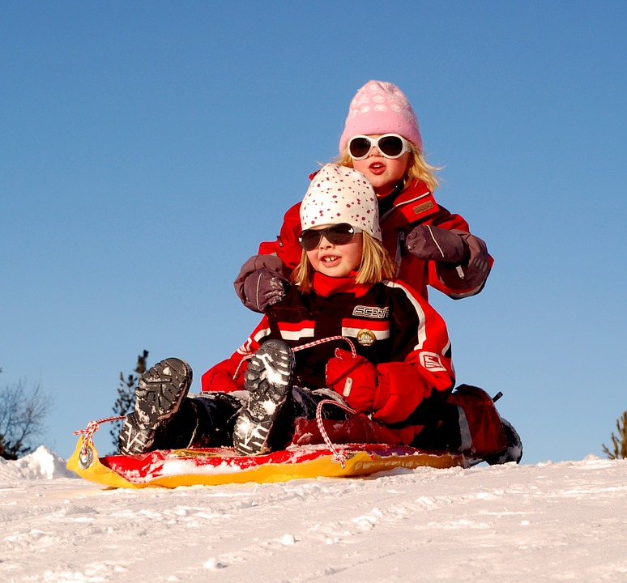
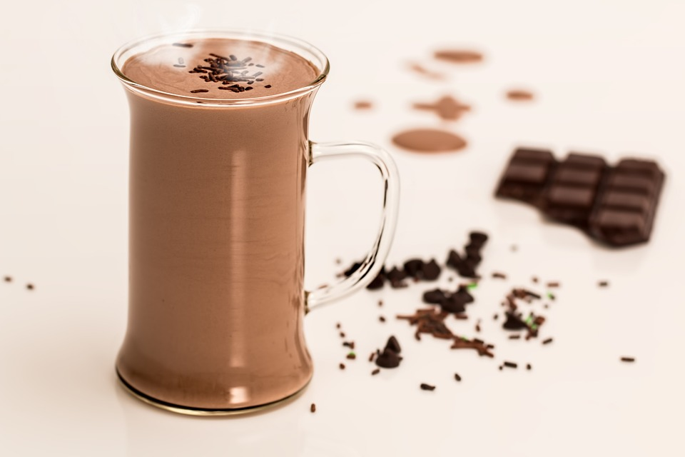
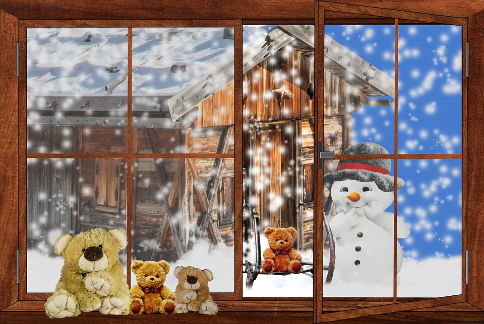

Winter Can Be Fun for (Almost) Everyone!
When the snow comes down you might have some trouble finding something to do to enjoy yourself, but fret not! There can be a multitude of activities for you to stay positive. Here are a few ways for you to spend your time when the next blizzard hits.
Build a Snow Fort!
One of my favorite pasttimes as a kid was to make small snow forts or igloos out of all the snow that was piled up after shoveling. It can help you show your creativity as well as burn up some energy carving out the snow from the inside! And then several days later you can watch it melt away.
Snowball Fights
Snowball fights can be a lot of fun! The majority of the time you won't even be able to make a proper snoball and end up with a mishapen blob that's probably half ice. Sure it might sting a bit, but all's fair in love and snowball fights!
Sledding
Going sledding is possibly the most fun thing you can do once the snow finally hits! You get to zip down a hill at great speeds having a blast. Well, that is until you reach the bottom and realize you're going to have to trek back up it for the next 5 minutes debating whether it's worth it. But trust me, it is.
Hot Chocolate
After you spend a bit of time outside(or maybe none) nothing's better than coming in and having a nice warm cup of hot chocolate. It'll be sure to heat you up! Make sure to add some marshmallows to make it taste impossibly 200% better!
Wait
For those of you who truly dislike the snow, you can always stare out the window and wait for the snow to go away. Maybe grab some of the hot chocolate mentioned before to keep you company!